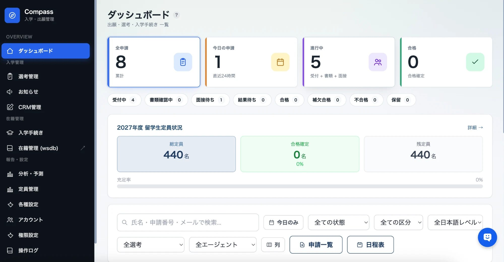
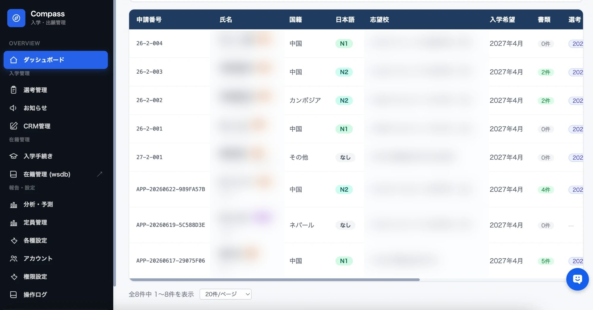
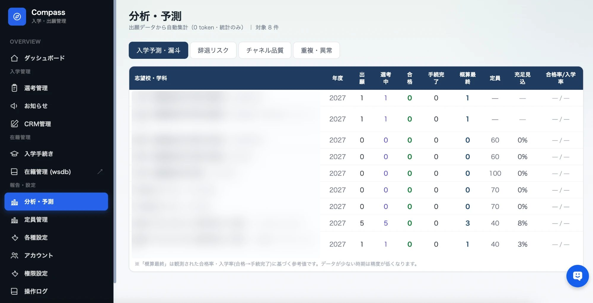
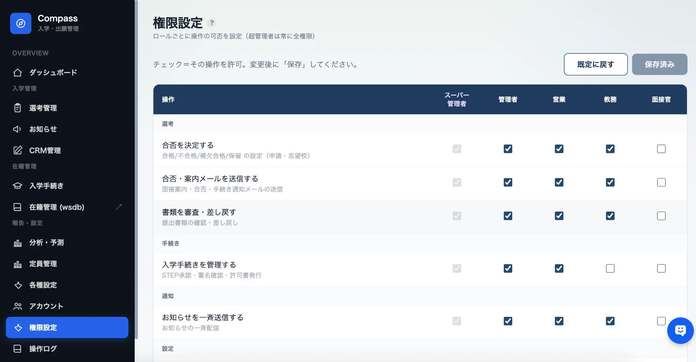

From paper and spreadsheets
to one application platform across schools.
Compass, the student application and management system built by XY, K.K., handles applications from international and domestic students, across multiple schools and programs, in one system. Schools configure separate forms for each school and applicant type in the admin console without writing code, and AI assists with document checks and communication. This case study covers its use at Hirai Gakuen Educational Corporation, a school corporation operated within our own education group.
01Background and challenges
The school corporations in our education group receive a large number of applications every year, most of them from international students. Application processing depended on paper and spreadsheets, and every new school, program or applicant type made it harder to run.
- Work centered on paper, Excel and email, with a lot of manual re-entry and checking
- Forms assumed international applicants, with fields such as residence status (visa) and Japanese proficiency
- Accepting Japanese applicants meant building and maintaining a separate form
- Required documents and fields differed by school and program, so the know-how sat with a few staff members
- The list of schools and the form settings were not linked, so each addition needed manual fixes
- Checking for missing documents and contacting applicants took a long time
02The solution: Compass
An admissions and application platform that multiple schools can share. It consists of an applicant portal and an admin console that school staff use to run it, and every setting is organized around one axis: the applicant type (domestic / international).
A clear path to submission
Choose applicant type → choose school → fill in the form for that type → pay fees → review and submit. Available in Japanese and English.
Administration that keeps work moving
Screening, capacity, document management and an audit log. Forms for each school and applicant type are edited without code.
Example: international applicants see fields such as residence status, period of stay and Japanese level. For domestic applicants these are hidden by default, and each school can turn them on in the admin console as needed. All changes are non-disruptive: existing applications keep working exactly as before.

Results
Application processing and administration for about 440 applicants, which used to take 6–8 staff members, is now handled by 1–2. The administrative load dropped sharply, and staff can focus on the work they are actually there to do.
The admin console
Screens from the admin console that school staff use every day, from status overview and application management to analytics, forecasting and permissions. Names and school names are hidden for privacy.




03Key features
Instead of duplicating forms, we added a single new dimension, applicant type, to the existing system. With minimal changes, each school can show different fields to different applicant types.
Applicant types
Applicants choose domestic or international first. The type is saved with the application and drives the forms, display and filters that follow. The default is international, so existing behavior is unchanged.
Forms per school and type (no code)
Whether a field is shown, whether it is required, its label and its order can all be edited per school and type in the admin console. Required documents work the same way.
Linked school list
When a school is added to the school list, it appears automatically as a tab in form management. No more maintaining the list and the form settings separately.
Screening and capacity
Capacity counts based on application status, with filtering and display by applicant type. The application detail view shows the applicant type as a badge.
Application numbers and audit log
Application numbers are assigned automatically for each intake round. Key admin actions are recorded in an audit log.
Reliability and operations
Rate limiting against repeated submissions and bots, plus encrypted daily off-site backups for business continuity.
AI assistance: document checks
Helps detect missing or mislabeled documents, so fewer problems slip through review.
AI assistance: interview notes and messages
Drafts interview evaluations and emails to applicants. Staff review the draft and send it.
Design principle: never stop a live system
Applications are where revenue begins. Every feature was designed to be non-disruptive, built mainly on new columns with default values, so applications without a type and all existing data keep working as before. The form display logic is isolated as pure functions, and automated tests protect its quality.
04Technology and how we build
We combine a modern web stack with AI and build quickly with a small team and AI-assisted development, set up so the system can keep improving.
Deployments without downtime
Automated deployments with atomic switchover, automatic rollback and a backup before every deploy. If something goes wrong, we can roll back immediately.
Built-in quality checks
Core logic such as form display is written as pure functions, and unit and browser E2E tests prevent regressions. Only changes that pass type checks and a production build are released.
From application to enrollment: the full Compass roadmap
Compass is not limited to applications. It aims to connect school operations centered on international students on one platform, from before a student applies to their time at school and next steps after. The Admission edition is available now, and the Enrollment edition is offered as add-on modules, so schools can adopt it in phases to fit their situation.
Admission edition
From choosing a school to applying, results and enrollment
Enrollment edition
Year-round school administration after enrollment, in one place
International student edition
Features for international students that other vendors don't offer
The Enrollment and International student editions carry over the data already collected in the Admission edition. Pricing is proposed based on the number of schools, enrollment size and the modules you choose. For details, please contact us.
05Value and what comes next
Less paper and re-entry, with everything from application to screening in one place. AI supports the checking and the messaging.
Domestic and international students, multiple schools and programs, in one system. Easy to extend to more schools.
Non-disruptive design and testing let it evolve safely. A foundation built with an operating platform for school corporations, and a SaaS offering, in mind.
Human × AI × Global
Compass is the first step toward an operating platform for school corporations. Starting from applications, we are connecting HR, enrollment and accounting into education infrastructure where people and AI work together, and we aim to make it a platform other educational institutions can use as well.
Interested in Compass
or a demo?
We will propose a rollout plan that fits your school's application process. Feel free to get in touch.